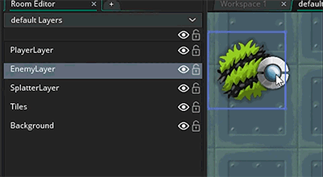

Before continuing, we should look at the concept of layers in a bit more depth. The bullet instance we are creating is created using the Instance Create action  , which creates the instance and assigns it to the layer ID that you give, - in this case the default Room Editor layer for instances. But... what is a layer? Simply put, layers are conceptual 2D spaces that we can use to store things, and the order in which we have the layers within the room editor will affect the depth at which the instance is drawn:
, which creates the instance and assigns it to the layer ID that you give, - in this case the default Room Editor layer for instances. But... what is a layer? Simply put, layers are conceptual 2D spaces that we can use to store things, and the order in which we have the layers within the room editor will affect the depth at which the instance is drawn:

In the above image, you can see that by changing the layer order we can change whether the player instance is being drawn over the enemy instances or not. Note that if you have several instances on the same layer, then these will be drawn in the manner that is most efficient, normally from the first created on that layer to the last but this is not guaranteed. So, if you want something to appear above or below something else, it should be placed on an explicit layer. The following image is a schematic representation of how layers are rendered to help you visualise what's going on:
In our tutorial game, we have just set the bullet instances to use the same layer that the instance of "obj_player" is assigned to by using the layer name "Instances" from the room editor. All objects are placed on layers, and when an instance is created in a room it must always be assigned to a layer, and the layer it is assigned to will affect the render order, ie: whether it is drawn "above" or "below" other things that are being drawn on other layers. We could, for example, have created a "BulletsLayer" in the room editor, and then used that to explicitly say we want the bullets on a unique layer - the action for that would have been simply:
You can see there that if a layer has been created in the room editor, we can use its name as an identifier to target it within this action (and a few others). We will do this a little later on in the tutorial, so don't worry about it just now and we'll just use the "Instances" layer to start with.
If you want to find out more about the layer functions, press  to open the manual and do a search for "layers".
to open the manual and do a search for "layers".